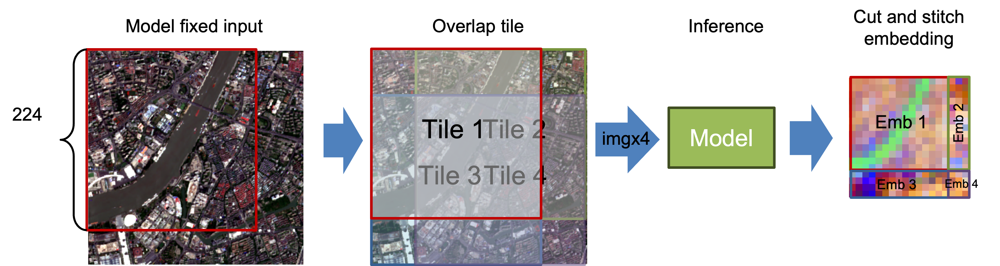

API Specs & Data Structures¶
This page documents the core spec/data types used across the public API.
For task-oriented usage, see Common Workflows. For exact embedding/export/inspect functions, see:
Start with SpatialSpec (BBox or PointBuffer) to define the ROI.
Use TemporalSpec.year(...) for precomputed/year-indexed products and TemporalSpec.range(...) for provider/on-the-fly fetch windows.
Use OutputSpec.pooled() first unless you specifically need spatial structure (grid).
Data Structures¶
SpatialSpec¶
SpatialSpec describes the spatial region for which you want to extract an embedding.
BBox¶
BBox(minlon: float, minlat: float, maxlon: float, maxlat: float, crs: str = "EPSG:4326")
- An EPSG:4326 lat/lon bounding box (the current version supports only EPSG:4326).
validate()checks that bounds are valid.
PointBuffer¶
PointBuffer(lon: float, lat: float, buffer_m: float, crs: str = "EPSG:4326")
- A buffer centered at a point, measured in meters (a square ROI; internally projected into the coordinate system required by the provider).
- Requires
buffer_m > 0.
TemporalSpec¶
TemporalSpec describes the time range (by year or by date range).
TemporalSpec(mode: Literal["year", "range"], year: int | None, start: str | None, end: str | None)
Recommended constructors:
TemporalSpec.year(2022)
TemporalSpec.range("2022-06-01", "2022-09-01")
Temporal range is a window
TemporalSpec.range(start, end) is treated as a half-open interval [start, end), so end is excluded.
Temporal semantics in provider/on-the-fly paths:
TemporalSpec.range(start, end)is interpreted as a half-open window[start, end), whereendis excluded.- In GEE-backed on-the-fly fetch,
rangeis used to filter an image collection over the full window, then apply a compositing reducer (defaultmedian, optionalmosaic). - So the fetched input is usually a composite over the whole time window, not an automatically selected single-day scene.
- To approximate a single-day query, pass a one-day window such as
TemporalSpec.range("2022-06-01", "2022-06-02").
About input_time in metadata:
- Many embedders store
meta["input_time"]as the midpoint date of the temporal window. - This midpoint is metadata (and for some models, an auxiliary time signal), not evidence that imagery was fetched from exactly that single date.
Common gotcha
input_time often looks like a single date, but the actual provider fetch may still be a composite over the full temporal window.
SensorSpec¶
SensorSpec is mainly for on-the-fly models (fetch a patch from GEE online and feed it into the model). It specifies which collection to pull from, which bands, and what resolution/compositing strategy to use.
SensorSpec(
collection: str,
bands: Tuple[str, ...],
scale_m: int = 10,
cloudy_pct: int = 30,
fill_value: float = 0.0,
composite: Literal["median", "mosaic"] = "median",
check_input: bool = False,
check_raise: bool = True,
check_save_dir: Optional[str] = None,
)
collection: GEE collection or image IDbands: band names (tuple)scale_m: sampling resolution (meters)cloudy_pct: cloud filter (best-effort; depends on collection properties)fill_value: no-data fill valuecomposite: image compositing method over the temporal window (median/mosaic)check_*: optional input checks and quicklook saving (seeinspect_gee_patch)
Note
For precomputed models (e.g., directly reading offline embedding products), sensor is usually ignored or set to None.
OutputSpec¶
OutputSpec controls the embedding output shape: a pooled vector or a dense grid.
OutputSpec(
mode: Literal["grid", "pooled"],
scale_m: int = 10,
pooling: Literal["mean", "max"] = "mean",
grid_orientation: Literal["north_up", "native"] = "north_up",
)
Recommended constructors:
OutputSpec.pooled(pooling="mean") # shape: (D,)
OutputSpec.grid(scale_m=10) # shape: (D, H, W), normalized to north-up when possible
OutputSpec.grid(scale_m=10, grid_orientation="native") # keep model/provider native orientation
pooled¶
ROI-level Vector Embedding
Semantic meaning
pooled represents one whole ROI (Region of Interest) using a single vector (D,).
Best suited for:
- Classification / regression
- Retrieval / similarity search
- Clustering
- Cross-model comparison (recommended)
Unified output format:
Embedding.data.shape == (D,)
How it is produced:
ViT / MAE-style models (e.g., RemoteCLIP / Prithvi / SatMAE / ScaleMAE):
- Native output is patch tokens
(N, D)(with optional CLS token) - Remove CLS token if present, then pool tokens across the token axis (
meanby default, optionalmax)
Mean-pooling formula:
Precomputed embeddings (e.g., Tessera / GSE / Copernicus):
- Native output is an embedding grid
(D, H, W) - Pool over spatial dimensions
(H, W)
Why prefer pooled for benchmarks:
- Model-agnostic and stable
- Less sensitive to spatial/token layout differences
- Easiest output to compare across models
grid¶
ROI-level Spatial Embedding Field
Semantic meaning
grid returns a spatial embedding field (D, H, W), where each spatial location maps to a vector.
Best suited for:
- Spatial visualization (PCA / norm / similarity maps)
- Pixel-wise / patch-wise tasks
- Intra-ROI structure analysis
Unified output format:
Embedding.data.shape == (D, H, W)
Notes:
datacan be returned asxarray.DataArraywith metadata inmeta/attrs- For precomputed geospatial products, metadata may include CRS/crop context
- For ViT token grids, this is usually patch-grid metadata (not georeferenced pixel coordinates)
How it is produced:
ViT / MAE-style models:
- Native output: tokens
(N, D) - Remove CLS token if present, reshape remaining tokens:
(N', D) -> (H, W, D) -> (D, H, W)(H, W)comes from patch layout (for example,8x8,14x14)
Precomputed embeddings:
- Native output is already
(D, H, W)
InputPrepSpec¶
Optional Large-ROI Input Policy
InputPrepSpec controls API-level handling of large on-the-fly inputs before model inference.
This is mainly useful when you want to choose between the model's normal resize path and API-side tiled inference.
InputPrepSpec(
mode: Literal["resize", "tile", "auto"] = "resize",
tile_size: Optional[int] = None,
tile_stride: Optional[int] = None,
max_tiles: int = 9,
pad_edges: bool = True,
)
Recommended constructors:
InputPrepSpec.resize() # default behavior (fastest)
InputPrepSpec.tile() # tile size inferred from model defaults.image_size when available
InputPrepSpec.auto(max_tiles=4) # choose tile or resize automatically
InputPrepSpec.tile(tile_size=224) # explicit tile size override
You can also pass a string to public APIs as a shorthand:
input_prep="resize" # default
input_prep="tile"
input_prep="auto"
Current tiled design (API layer):
- Tile size defaults to
embedder.describe()["defaults"]["image_size"]when available (can be overridden). - Boundary tiles use a cover-shift layout (for example
300 -> [0,224]and[76,300]) to avoid edge padding when possible. - Grid stitching uses midpoint-cut ownership in overlap regions (instead of hard overwrite).
tile_stridecurrently must equaltile_size(explicit overlap/gap configuration is not enabled yet), but boundary shifting can still create overlap on the last tile.autois conservative and currently prefers tiling mainly forOutputSpec.grid()when tile count is small enough (max_tiles).

Embedding¶
get_embedding / get_embeddings_batch return an Embedding:
from rs_embed.core.embedding import Embedding
Embedding(
data: np.ndarray | xarray.DataArray,
meta: Dict[str, Any],
)
data: the embedding data (float32, vector or grid)meta: includes model info, input info (optional), and export/check reports, etc.